失败详情组件与常驻通知（第 6 轮）
（第 4 轮的说明）第 3 轮你选了“详情开对话框”，并要求优化对话框里“文字展示 + 复制”的样式、考虑复用组件或直接用 Markdown 代码块。这一轮是真实实现的截图（不再是静态稿），亮色；第 3 轮的几题已定，挪到下面。
t04 已经合入。剩两件要你定：通知离窗口右边多远（实现时顺手改了，没经你确认），以及下一步先做哪个 Task。图是 Lab 里的真实组件，亮色；灰框代替窗口，通知贴在框的右下角。
待定靠右的通知离窗口右边多远
原来的写法是“整列占满宽度、再往左挪 16px”，窗口比 464px 窄时（手机）整列会从左边溢出 16px：卡片贴着左边、右边空 32px，新加的折叠小条也被裁掉。实现时改成贴右，桌面上的距离也随之从 32px 变成 16px，这个外观变化没经你确认。所有页面靠右的通知都受影响。
A 一律 16px（现在合入的）
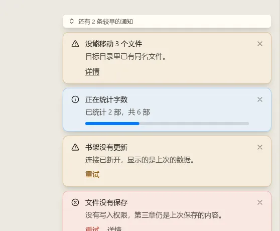
桌面：离右边 16px
 390 宽：左右各 16px
390 宽：左右各 16px
B 改回原来的 32px
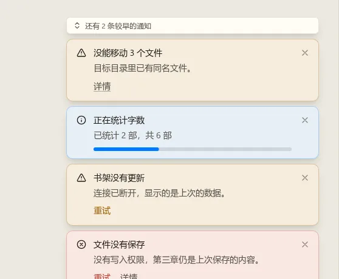
桌面：离右边 32px
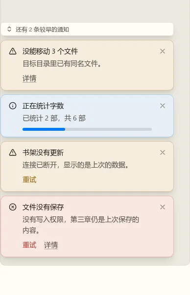
390 宽：卡片贴左边、右边空 32px，折叠小条被裁
C 宽窗口 32px，窄窗口自动收到 16px
 桌面：离右边 32px（同原来）
桌面：离右边 32px（同原来）
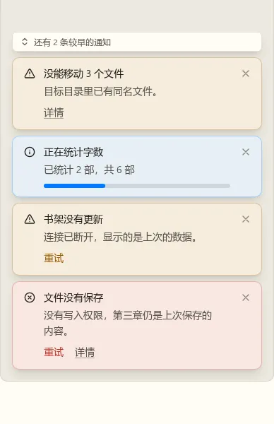
390 宽：左右各 16px，不溢出
按窗口宽度算右边距：放得下 448px 宽的通知列再加 16px 时离右边 32px，放不下时逐渐收到 16px。改一行。
推荐 C：桌面保持原来的观感，手机上的溢出也修了。
待定下一步先做哪个
w00031 t03：把错误码与参数投影成用户看得懂的主文案，诊断原文放进这次做好的“详情”。11-07 你同意的顺序是 t04 做完先做它。
w00028 t05：编辑器顶部横幅（保存失败、外部改动、冲突等）与资源管理器栏底的结果区改发通知，标签上“保存失败”换警告图标。做完它 w00028 就能收口；但那时失败的详情原文还没有投影，只能先放现有的诊断文字。
推荐按原顺序先做 w00031 t03。
（第 5 轮的说明）第 4 轮你说对话框“样式有点丑”。我对照设计语言找了原因，这一轮出三种外观上拉开差距的候选。图是 Lab 里用真实 nb-ui 组件搭的静态稿，亮色，另附暗色与 390 宽。
已定：A 不给面详情对话框的外观（取代第 4 轮那一题）
第 4 轮那一版的问题（对照 nb-ui/docs/design-language.md）：
- 盒中盒：对话框里套一个带描边的块，块里又有一条分隔线。设计语言写的是“面板里再放一个面，多数情况的正确答案是不给面”。
- 层级方向反了：块的底色比对话框更暗，读起来像凹槽；往上叠的面应当更亮。
- 标签重复：“诊断原文”与标题里的“详情”说的是同一件事。
- 对比度低：次级灰字压在灰底上。
- 长行被硬切：URL 编码的长行在右边截断，看起来像坏了。
三个候选都改掉了后三条：去掉标签，文字用主文字色，长行折行，折出来的续行比本行多缩 2 个字符（堆栈帧折成两行时看得出是同一帧）。差别在前两条：
A 不给面
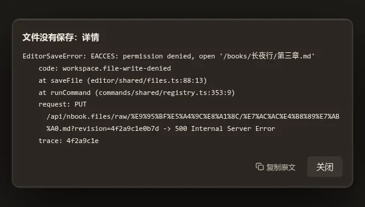
暗色
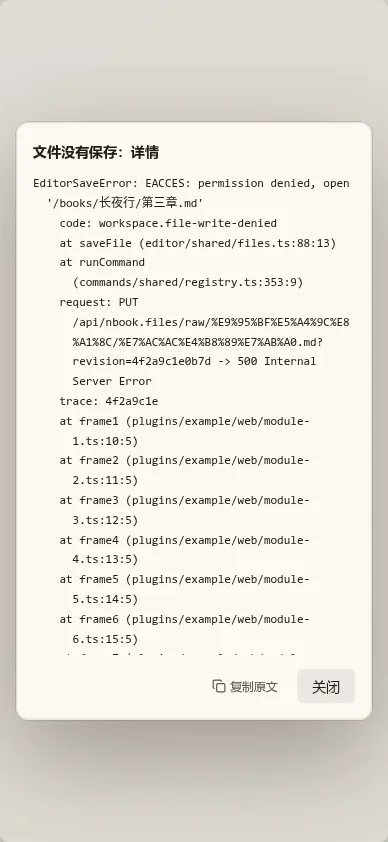
390 宽、长原文：对话框正文自己滚动
标题、原文、按钮三块，没有内层盒子。复制是有名字的按钮“复制原文”，与“关闭”并排在页脚。最符合设计语言；代价是原文与标题之间只靠字体区分。
实现上：DetailDialog 自己画原文（不再用 CodeBlock），切片 1 给 CodeBlock 加的块头操作位没有使用方，撤掉。
B 亮一层的面
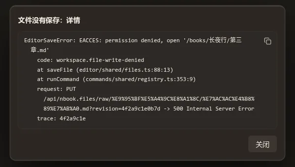
暗色
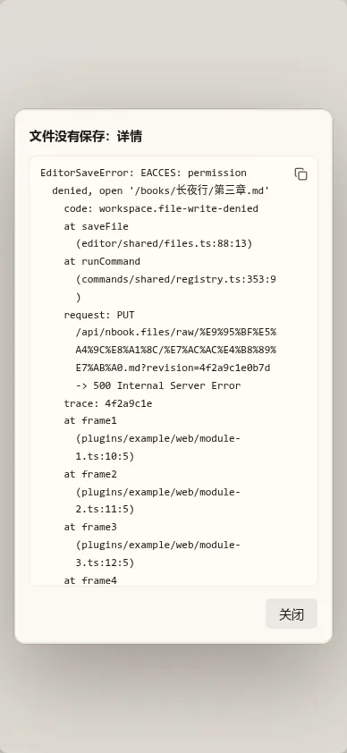
390 宽、长原文：块内滚动，复制图标留在块角
块用不透明的面板色（比对话框的半透明面亮一档），不画描边，只有一圈极淡的轮廓。复制是块右上角的图标按钮（悬停提示“复制原文”，点了换成对勾）。原文一眼能和其它内容分开。
实现上：CopyButton 加只有图标的样式；块由 DetailDialog 画，CodeBlock 的块头操作位同样撤掉。
C Markdown 代码块观感
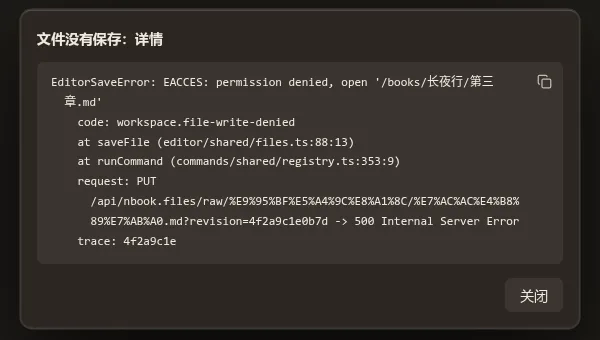
暗色
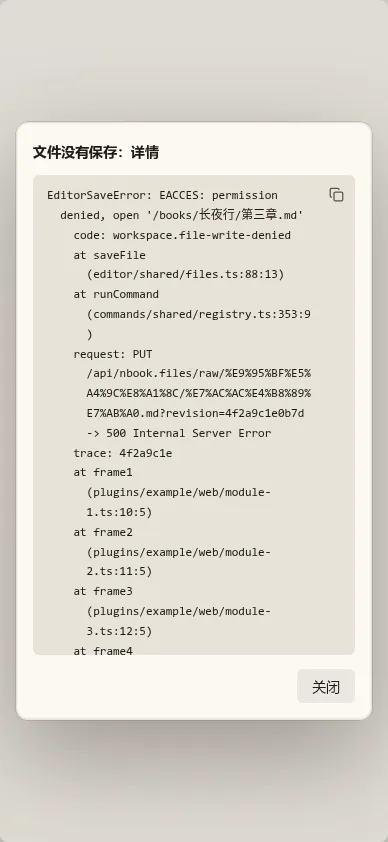
390 宽、长原文
照 Markdown 渲染里代码块的样子：悬停色的浅底、圆角 6px、宽松内边距、无描边。你第 3 轮提过“直接用 Markdown 的代码块来展示”，这是那个观感（Markdown 包建在 nb-ui 之上，组件本身不能反过来复用）。与 B 的区别只在底色比对话框暗还是亮。
推荐 A：内容只有一段原文，不需要再框一层；“复制原文”是有名字的按钮，比块角的图标好找。喜欢原文被框起来的话选 B（亮一层符合层级规则），C 的暗底与设计语言的层级方向相反。
未通过（你说“样式有点丑”）详情对话框：原文展示加复制（第 4 轮）
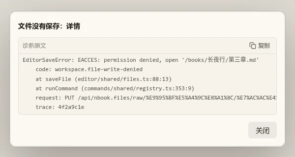
通知“文件没有保存”点“详情”打开的样子
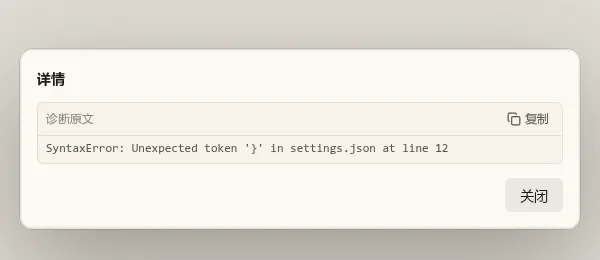
通知没有标题时，对话框标题只写“详情”
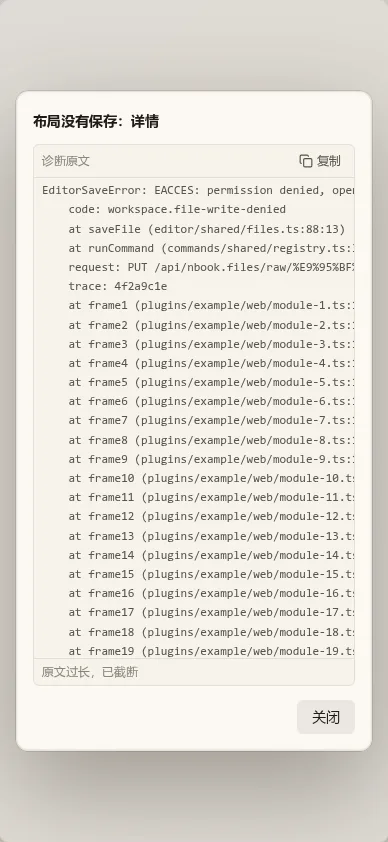
390 宽、很长且被截断的原文：只在块内滚动，复制按钮始终在块顶；块底写“原文过长，已截断”
相对第 3 轮静态稿改了这些：
- “诊断原文”与“复制”合成一行块头，第 3 轮复制按钮单独占的那一行去掉了；块头下面一条分隔线。
- 原文字号从 11px 提到 12px（主题规定 11px 只给角标、序号，不承载要读的句子），行高 1.6；长行不折行，在块内横向滚动。
- 复制后按钮变成绿色对勾“已复制”，1.5 秒后复原；剪贴板不可用（例如用 http 地址打开）时先退到浏览器的旧复制方式，两条都不通才显示红色“复制失败，请手动选择文字”。原文本身可以直接选中复制，空行复制出来是空的。
- 页脚只有次级按钮“关闭”；打开时焦点落在正文上，不在复制按钮上画光晕。
复用：原文块就是 nb-ui 现有的 CodeBlock（Agent 对话视图的工具详情也用它），这次只给它加了块头右侧的操作位与可调最大高度；复制做成单独的 CopyButton，以后别处放原文也能用。没用 Markdown 的代码块：它是一块没有块头、没有复制、没有高度上限的 pre，而且 Markdown 包建在 nb-ui 之上，nb-ui 里的对话框不能反过来依赖它。
推荐确认。要调字号、颜色或块头的，直接在评论里写。
已定：左对齐通知里的动作行放左还是放右
动作行是正文下面单独一行，“重试”“详情”并排，关闭键留在右上角；正文宽度不再随有没有动作变化，代价是每条带动作的通知高约 30px。
A 左对齐
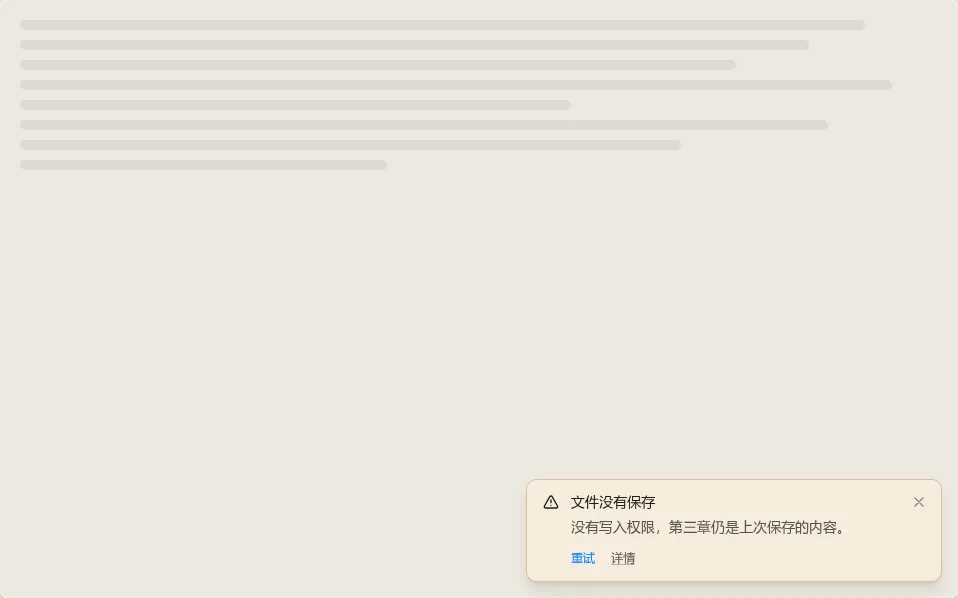
亮色
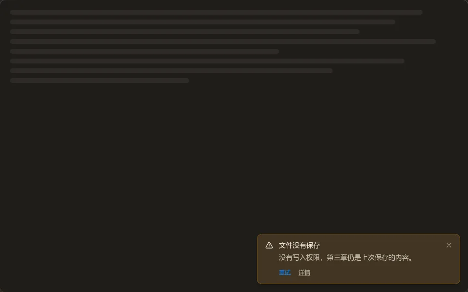
暗色
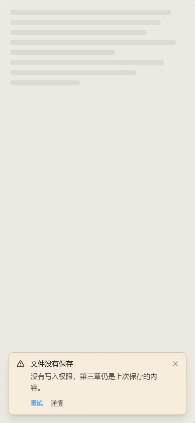
390 宽
读完正文目光直接落到动作；对齐稳，不依赖负外边距。
B 右对齐
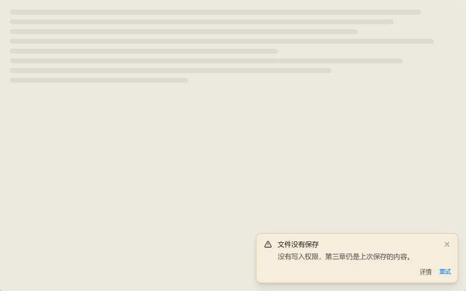
“详情”在左、“重试”靠右
主动作在最右，符合一些平台的习惯；但离正文最远，对到关闭键下方要靠负外边距，容易差几个像素。
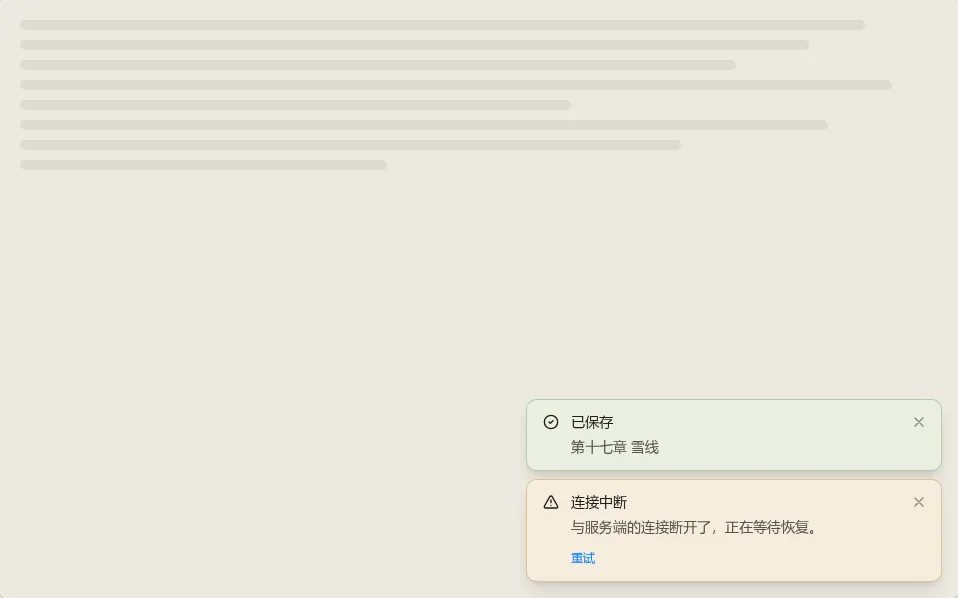
不带详情的通知同一套排法：动作统一在正文下一行（上：只有正文；下：带“重试”）
推荐 A。动作按钮的颜色我会跟随通知色调（沿用现在 actionLabel 的做法）；稿里用的主题蓝叠在琥珀色底上偏跳，不采用。
已定：对话框通知里的“详情”点开后怎么显示（取代第 1 轮 footer 插槽那一题）
A 点“详情”开居中对话框（第 2 轮你选的做法），通知本身不变高
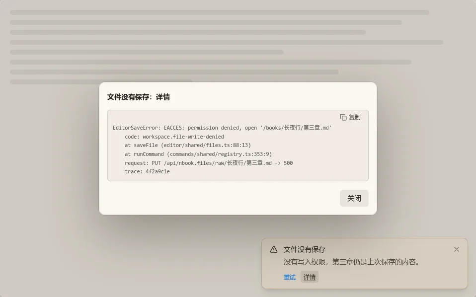
通知常驻在右下角，对话框在遮罩上方
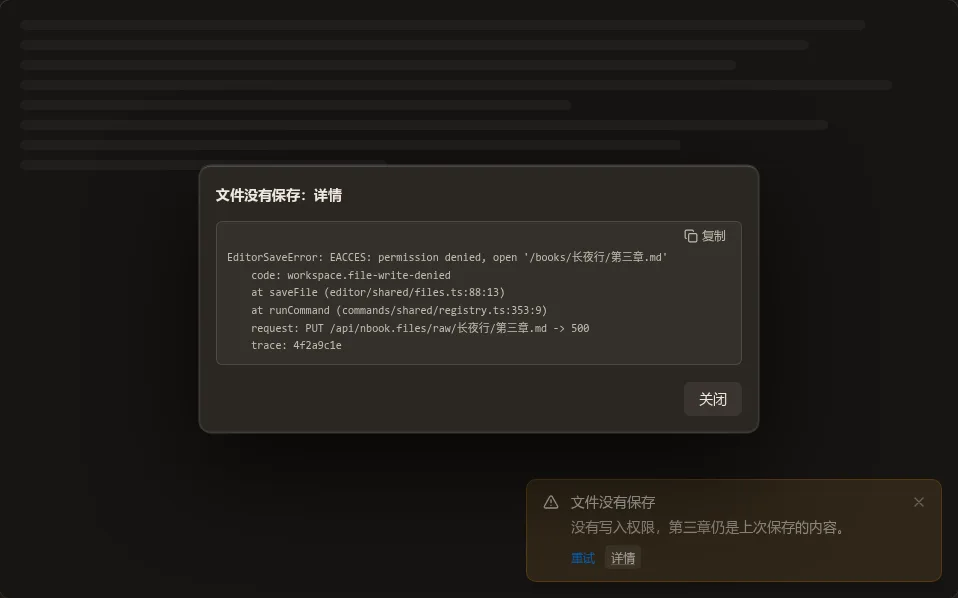
暗色
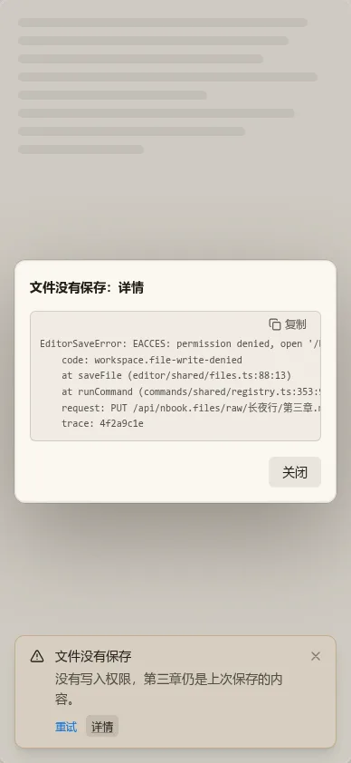
390 宽：左右各留 16px
全应用只有一种“详情”：通知、状态栏都点开同一个对话框。不再需要给 Notification 加整行宽的 footer 插槽，也不用处理“展开把堆叠推高”。代价：要多关一步；对话框是模态，通知里的“重试”要先关掉对话框才能点。
B 通知里原位展开，需要 footer 插槽
不用关对话框就能边看边点“重试”；但展开一条会把整个堆叠推高，通知一多就占屏。
推荐 A。
已确认没有横幅、没有常驻结果区的版面
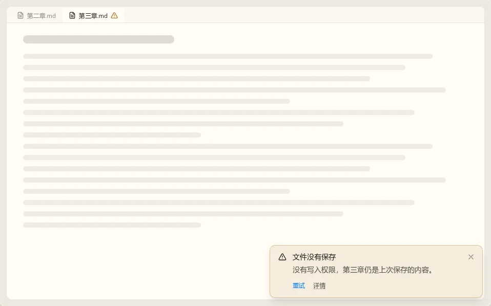
编辑器：顶上没有横幅，正文从标签栏下直接开始；标签上换成警告图标，失败通知在右下角
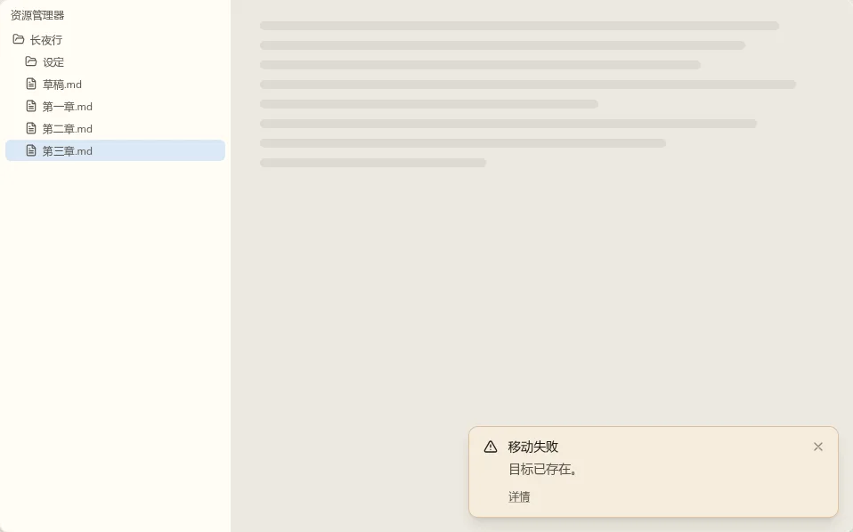
资源管理器：栏底没有常驻结果区，移动失败改发通知（只有“详情”）
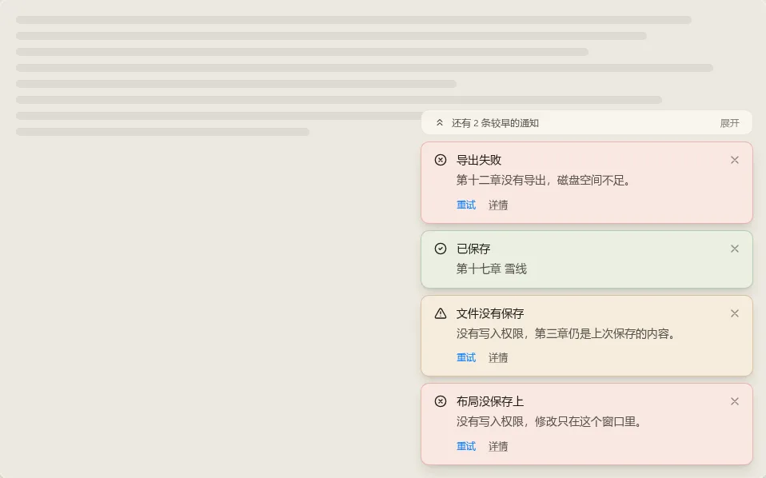
四条堆叠加“还有 2 条较早的通知”小条（第 1 轮已定的上限 4）
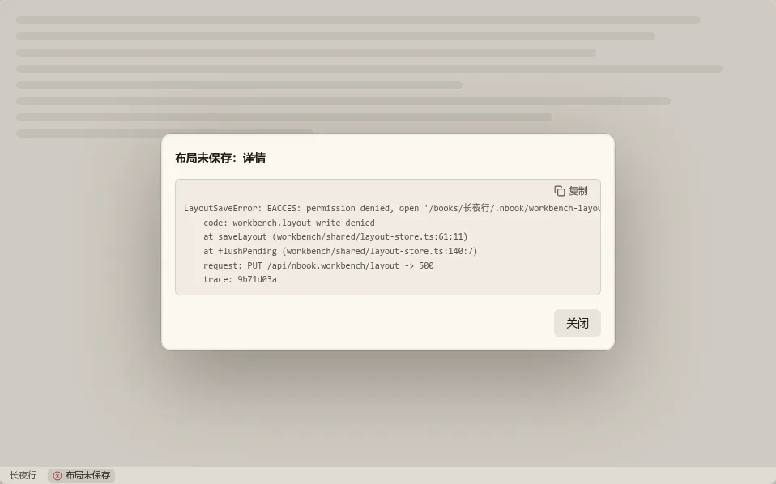
状态栏条目“布局未保存”：点开同一个对话框
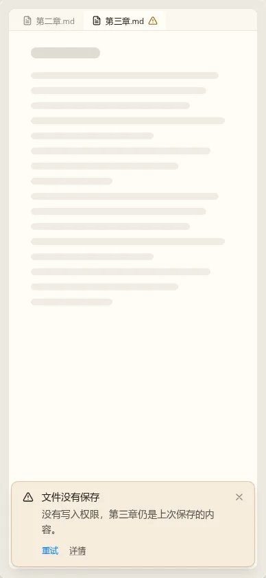
390 宽：编辑器
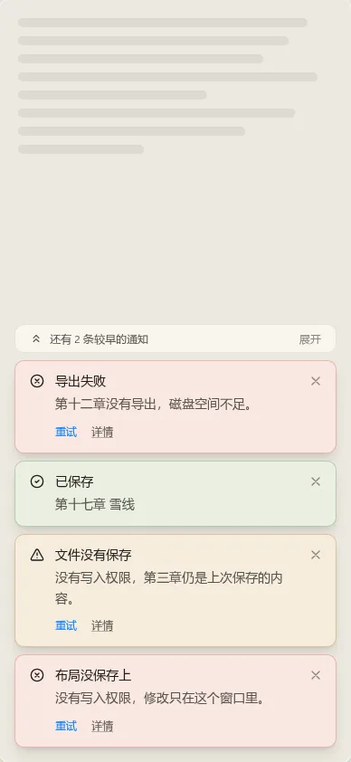
390 宽：堆叠
说明：
- 标签上正常的“有改动未保存”仍是小圆点，“保存失败”才换成警告图标，两种状态在标签上分开显示。
- 资源管理器栏底的结果区去掉，操作失败统一走通知（通知 Spec 的分工本来就是“一次操作的失败发通知”）。
- 状态栏里持续存在的问题（布局未保存）仍是状态栏条目，点开的是同一个对话框。
- 失败页与 Agent 对话视图这次不动。
- “只复制按钮”做法不再用，复制只在对话框里。
推荐确认。
已定前两轮的决定（提交在 Task README）
- 带详情的通知缺省常驻（发出方明确给
sticky: false 时仍按时消失），只能手动关闭；视口最多显示最新 4 条，其余折成“还有 n 条较早的通知”小条。
- 详情是字符串（
detail?: string，开发诊断原文，不翻译，已脱敏、最长 8000 字）；复制三态：待复制、已复制、复制失败（计划审查后改：不再全选原文提示 Ctrl+C，改用浏览器的旧复制方式作退路）。
- 原文区文字可选；暗色对比够用。复制按钮的位置见第 4 轮。
- 实现时的组件缺口：
NotificationItem 加 detail、NotificationStack 加上限与折叠小条、Notification 加动作行槽并改成网格布局、Button 视需要加最小档、Dialog 的初始焦点放在面板上。